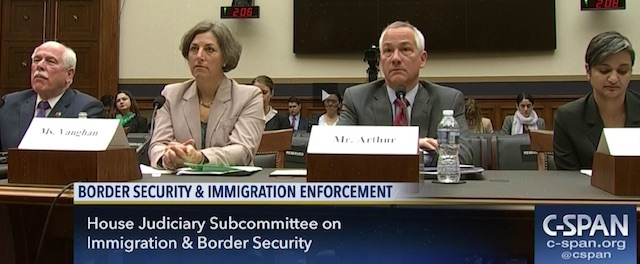

2017-10-19 08:00

On Thursday morning the SouthCoast Chamber of Commerce had Bristol County sheriff Tom Hodgson and Helena DaSilva Hughes to breakfast at the Wamsutta Club to discuss immigration. During his presentation the sheriff cited questionable statistics from the Federation for American Immigration Reform (FAIR), claiming that illegal immigration costs taxpayers $116 billion a year. The CATO Institute calls FAIR’s new study “fatally flawed” and “even more sloppy” than their previous one.
It would have more appropriate for Hodgson to speak about opioids, recidivism, or suicides. He actually knows something about the latter since his own jail accounts for a quarter of all county prison suicides. But there he was – again – acting as a spokesman for FAIR’s white supremacist immigration policies and conveniently avoiding trouble in his own backyard.
In 2015 Tom Hodgson appeared with Dennis Michael Lynch at an Islamophobic venue in Stoughton which had previously hosted Dutch neo-fascist Geert Wilders. Lynch is an Islamophobe, a white supremacist, a supporter of the Constitutional Sheriff Movement and of sovereign citizen Cliven Bundy, about whom he made a film.
That same year Hodgson appeared with a representative of the Federation for Immigration Reform (FAIR) at the Fisherman’s Club in New Bedford. Despite the name, FAIR has little to do with reform. Instead, its goal is assuring White Anglo-Saxon dominance. According to the Southern Poverty Law Center, FAIR has links to white supremacists and eugenicists. Its founder, John Tanton, wrote to one eugenicist: “I’ve come to the point of view that for European-American society and culture to persist requires a European-American majority, and a clear one at that.”
In 2016 the Sheriff was one of three speakers at a “Patriots Unity Day” rally in Randolph. The second speaker was Jessica Vaughan, of the nativist organization Center for Immigration Studies (CIS). Like FAIR, CIS was founded by John Tanton and publishes dubious statistics on immigration. According to the Southern Poverty Law Center, CIS also maintains links to white supremacist and anti-semitic groups. CIS executive director Mark Krikorian quipped after the deadly 2010 Haitian earthquake: “My guess is that Haiti’s so screwed up because it wasn’t colonized long enough.” The third speaker was Raymond Hanna with the anti-Muslim hate group ACT for America, which also has white supremacist ties. In Arkansas ACT’s “March Against Shariah” events were organized by a Nazi and publicized on Stormfront.
In June this year the Sheriff appeared with Dan Stein and Michelle Malkin at an annual “Hold their feet to the fire” broadcast with anti-gay bigot Sandy Rios. Stein is executive director of FAIR, and characterizes America’s immigration laws as an effort “to retaliate against Anglo-Saxon dominance.” Stein describes Central American immigrants as engaged in “competitive breeding” and asks: “Should we be subsidizing people with low IQs to have as many children as possible, and not subsidizing those with high ones?” Malkin too has links to white supremacist groups, including VDARE, and to Islamophobic groups. Malkin opposes the 14th Amendment, which gave citizenship to slaves.
According to FAIR’s 2011 annual report, that was the year the organization began cultivating sheriffs like Hodgson. “In 2011, we identified sheriffs who expressed concerns about illegal immigration.” FAIR staff “met with these sheriffs and their deputies, supplied them with a steady stream of information, established regular conference calls so they could share information and experiences, and invited them to come to Washington to meet with FAIR’s senior staff.” Since roughly that time Hodgson’s main job has been as a FAIR spokesman.
It’s hard to believe that the avuncular fellow who sends Thanksgiving turkeys to deportees in the Azores could really have such horrific views. But when the sheriff keeps consorting with white supremacists, singing and quoting their lyrics in the original German – well – it’s hard to reach any other conclusion. Tom Hodgson is a white supremacist.
It was disappointing that the Chamber of Commerce gave this hater a mainstream platform, and worse, an opportunity to skip another day of work – taking care of the business Bristol County voters actually elected him to do.